계정 관리#
세부 설정#
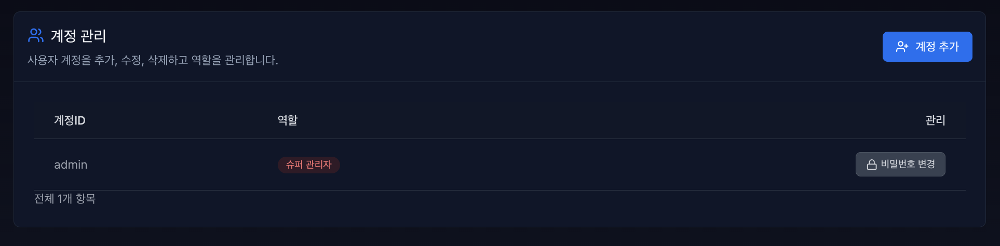
계정관리는 VirtOn 시스템을 사용하는 사용자 계정을 효율적으로 관리하기 위한 핵심 기능입니다. 관리자는 이 화면에서 새 계정을 추가하고, 기존 계정의 정보를 수정하며, 사용자 역할을 관리할 수 있습니다.
4.2.2.1 계정 추가#
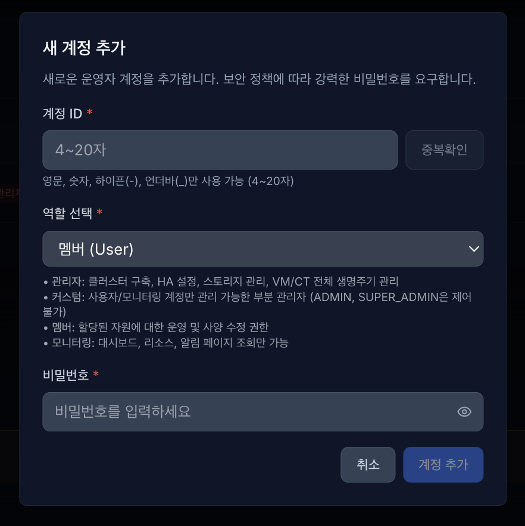

계정ID: 영문, 숫자, 하이픈, 언더바만 사용 가능하며 입력 후 중복 확인을 클릭합니다.
중복된 아이디가 있을 경우 존재 여부 메시지와 함께 생성 불가합니다.
4.2.2.2 역할 선택#
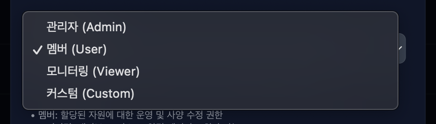
역할 선택
관리자: 클러스터 구축, HA 설정, 스토리지 관리, VM/CT 전체 생명주기 관리
커스텀: 사용자/모니터링 계정만 관리 가능한 부분 관리자 (ADMIN, SUPER_ADMIN은 제어 불가)
멤버: 할당된 자원에 대한 운영 및 사양 수정 권한
모니터링: 대시보드, 리소스, 알림 페이지 조회만 가능
4.2.2.3 비밀번호#

비밀번호: 패스워드 정책은 위와 같으며 입력 시 실시간로 검증하고, 모든 조건 충족 시 생성 가능합니다.
입력 칸 우측 눈 모양 아이콘 클릭 시 입력한 비밀번호를 확인할 수 있습니다.
4.2.2.4 관리#

관리 영역은 비밀번호 변경, 역할 변경, 비밀번호 리셋, 삭제가 있습니다. 단, 역할변경, 비밀번호 리셋, 삭제 기능은 관리자만 제어할 수 있습니다.
4.2.2.4.1 비밀번호 변경#
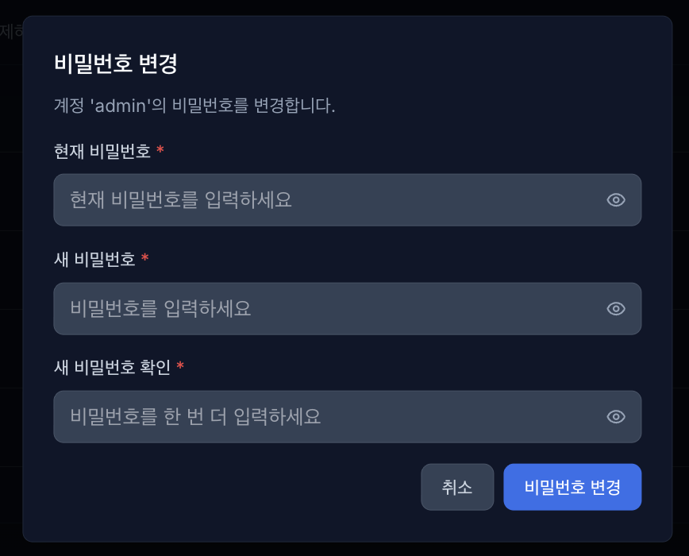
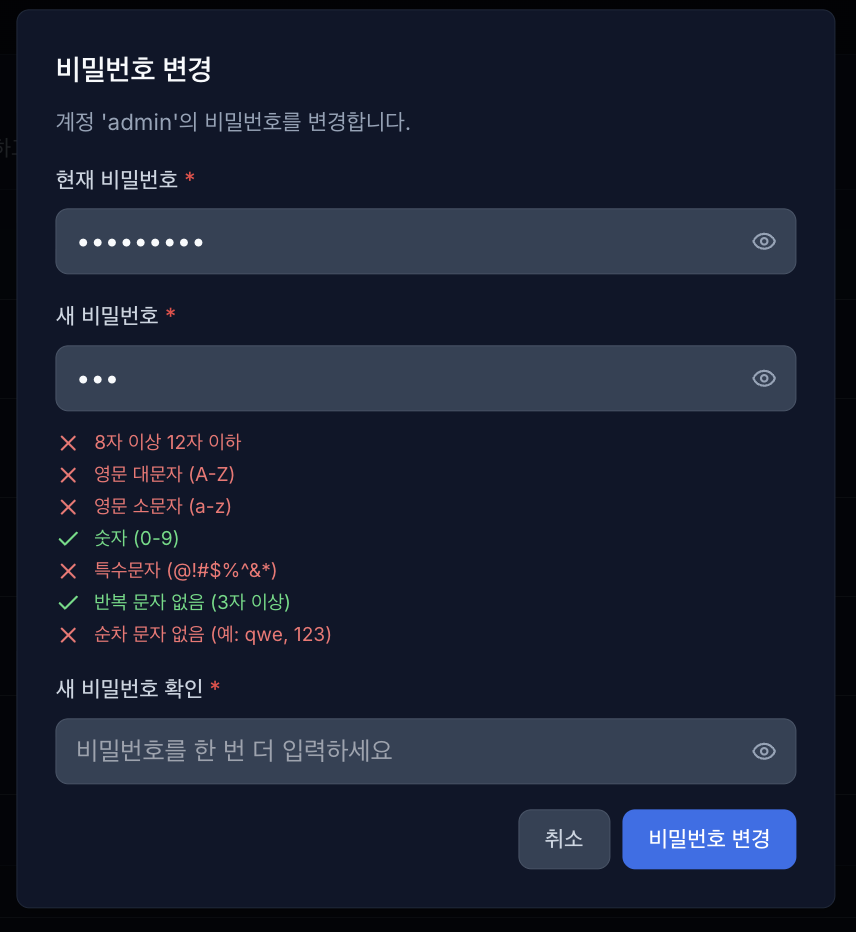
비밀번호 변경: 기존 비밀번호를 입력하며 새 비밀번호도 동일하게 패스워드 정책을 적용해 실시간으로 검증합니다.
비밀번호 변경은 자신의 계정만 변경 가능합니다. (해당 계정에 직접 로그인 후 변경)
4.2.2.4.2 역할 변경#

역할 변경은 관리자만 제어 가능하며 역할(role) 변경을 통해 권한 상승 또는 권한 하향 시킬 수 있습니다.
역할 변경 시 해당 계정의 기본 권한이 변경됩니다.
4.2.2.4.3 비밀번호 리셋#

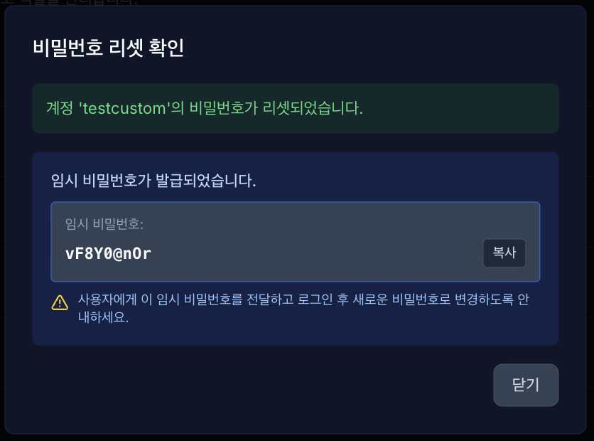
비밀번호 리셋은 관리자만 제어 가능하며 다른 계정의 비밀번호를 초기화 하고 임시 비밀번호를 발급받습니다.
발급받은 임시 비밀번호를 복사해서 해당 계정에게 전달합니다.
전달받은 계정은 직접 임시 비밀번호로 로그인 접속해서 비밀번호를 변경합니다.
4.2.2.4.4 삭제#
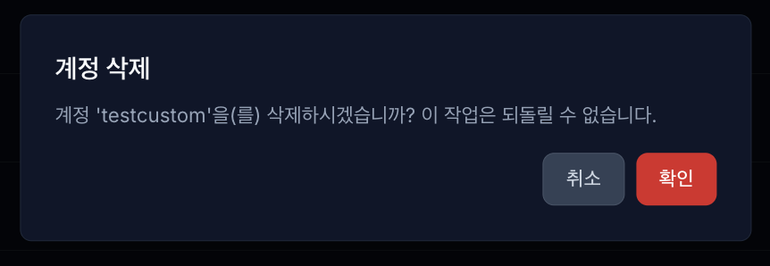
삭제 기능은 관리자만 가능하며 다른계정들을 삭제할 수 있습니다.
4.2.3 권한 관리#
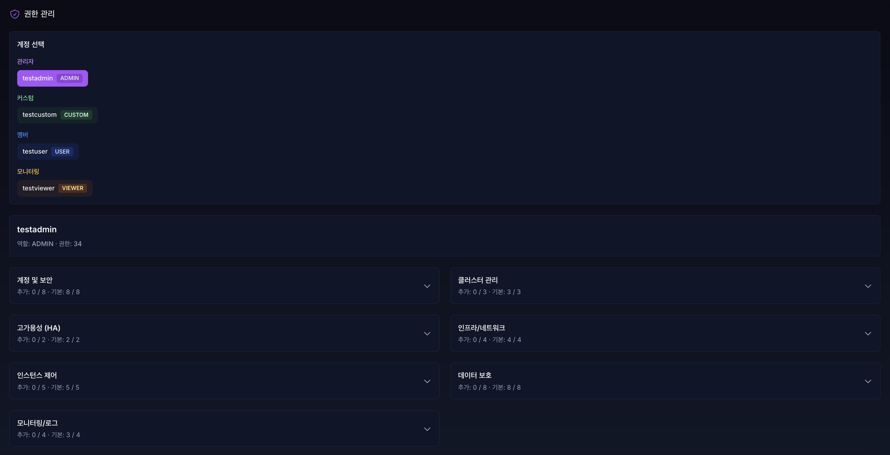
권한 관리 기능은 사용자별 **역할(Role)**에 따라 시스템 접근 및 제어 권한을 세밀하게 설정하고 통제하는 핵심 보안 기능입니다. 관리자는 사용자를 4가지 주요 등급(ADMIN, CUSTOM, USER, VIEWER)으로 분류하여 계정을 직관적으로 관리할 수 있습니다.
4.2.3.1 역할(Role)별 기본 권한 리스트(기능 허용범위)#
기능 카테고리 |
상세 기능 항목 |
슈퍼 관리자(super admin) |
관리자(admin) |
멤버(User) |
모니터링(viewer) |
|---|---|---|---|---|---|
계정 및 보안 |
사용자 등록/삭제 및 권한 부여 |
✅ |
✅ |
- |
- |
Proxmox API 연결 및 비밀번호 설정 |
✅ |
✅ |
- |
- |
|
Pool 관리(생성/삭제/리소스 연결/역할 할당) |
✅ |
✅ |
- |
- |
|
클러스터 관리 |
클러스터 생성 및 신규 노드 직접 추가 |
✅ |
✅ |
- |
- |
클러스터 네트워크 및 링크 설정 |
✅ |
✅ |
- |
- |
|
고가용성 (HA) |
HA 노드 역할(CRM) 및 쿼럼 상태 관리 |
✅ |
✅ |
- |
- |
HA 리소스(VM/CT) 추가 및 고급 설정 |
✅ |
✅ |
- |
- |
|
인프라/네트워크 |
Ceph 스토리지(OSD/MDS) 상태 관리 |
✅ |
✅ |
- |
- |
네트워크 인터페이스 생성/수정/삭제 |
✅ |
✅ |
- |
- |
|
인스턴스 제어 |
VM / CT 신규 생성 및 삭제 |
✅ |
✅ |
- |
- |
인스턴스 전원 제어 (시작/중지/재시작) |
✅ |
✅ |
✅ |
- |
|
콘솔 접속 (VNC 연결 및 키 전송) |
✅ |
✅ |
✅ |
- |
|
리소스 사양 수정 (CPU, 메모리 변경) |
✅ |
✅ |
✅ |
- |
|
데이터 보호 |
템플릿 변환 및 노드 간 마이그레이션 |
✅ |
✅ |
- |
- |
백업 생성/복구/삭제 및 보호 설정 |
✅ |
✅ |
✅ |
- |
|
스냅샷 생성/롤백/삭제(RAM 포함 선택) |
✅ |
✅ |
✅ |
- |
|
모니터링/로그 |
전체 대시보드 및 리소스 사용량 조회 |
✅ |
✅ |
✅ |
✅ |
실시간 알림(Alert) 및 Ceph 헬스 체크 |
✅ |
✅ |
✅ |
✅ |
|
감사 기록 조회 |
✅ |
✅ |
- |
- |
|
시스템 일반 설정 |
✅ |
✅ |
- |
- |
4.2.3.1.1 각 계정의 역할별 기본 권한 할당#
새로 추가된 계정은 역할 별로 기본적인 기능 권한이 할당됩니다. 이 기능은 삭제, 추가 가능합니다. 단, 슈퍼관리자, 관리자 계정만 제어 가능합니다.
관리자 계정은 대부분의 운영 권한을 가지지만, 일부 슈퍼관리자 전용 권한(예: 권한 관리, 시스템 초기화/업그레이드 관련)은 제외됩니다.
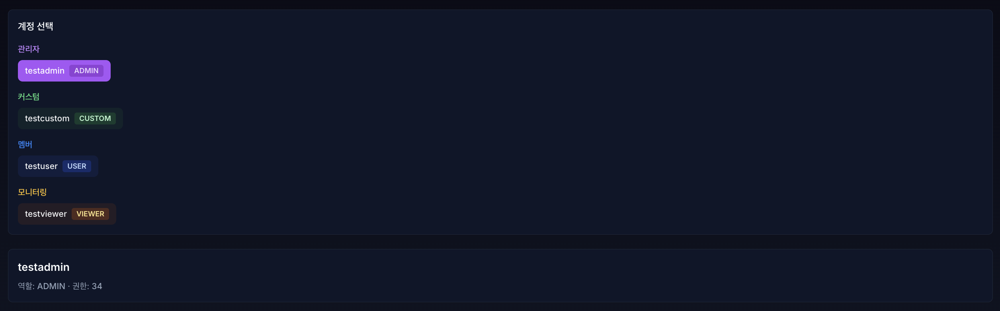
계정 목록에서 계정 선택시 각 계정별 역할과 권한 수를 확인할 수 있습니다.
4.2.3.2 역할 권한 추가, 삭제#
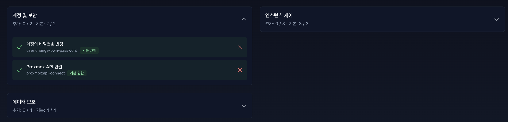
각 카테고리별로 할당된 기본 권한을 확인할 수 있으며 기본 권한이라고 표시됩니다.
4.2.3.2.1 기본 권한 삭제(관리자만)#
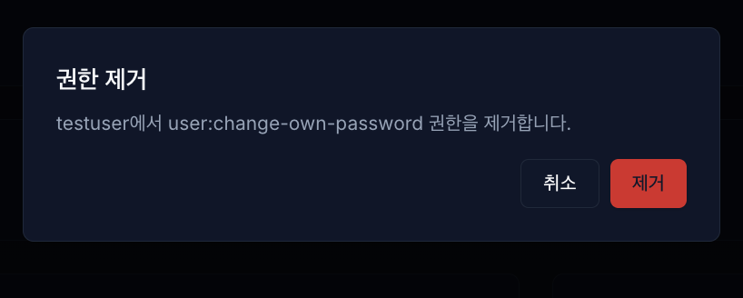

기능별 카테고리 목록에 X 버튼을 클릭하여 권한을 제거할 수 있습니다.
삭제된 권한은 + 버튼과 함께 권한에서 제거됩니다.
4.2.3.2.2 기본 권한 추가(관리자만)#

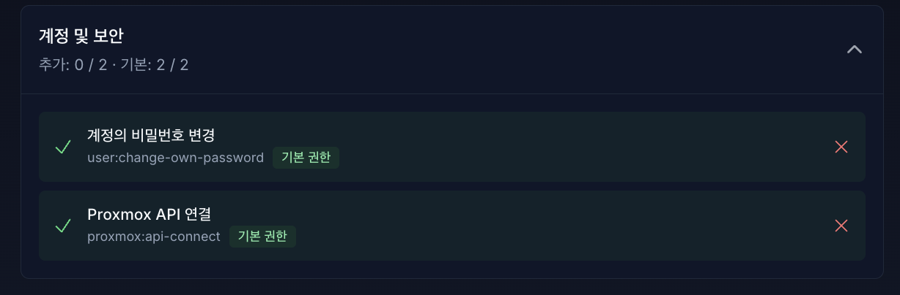
제거되어 있던 기본 권한을 다시 추가하면 기본 권한 표시와 함께 다시 할당됩니다.
4.2.3.2.3 CUSTOM 계정#

커스텀(CUSTOM) 역할은 특정 운영 환경이나 담당자의 업무 범위에 맞춰 관리자가 권한을 자유롭게 조립할 수 있는 가장 유연한 계정 등급입니다.
계정 생성 초기에는 어떠한 기본 권한도 부여되지 않은 완전한 무권한 상태(권한: 0)로 시작합니다.
시스템 관리자는 ‘계정 및 보안’, ‘클러스터 관리’ 등의 세부 카테고리에서 해당 사용자에게 필수적인 개별 접근 권한(예: 사용자 등록, 역할 변경 등) 우측의 추가(+) 버튼을 사용하여 필요한 권한만 수동으로 할당하거나 취소할 수 있습니다.
4.2.3.3 관리자 외 권한 관리 제어 금지#
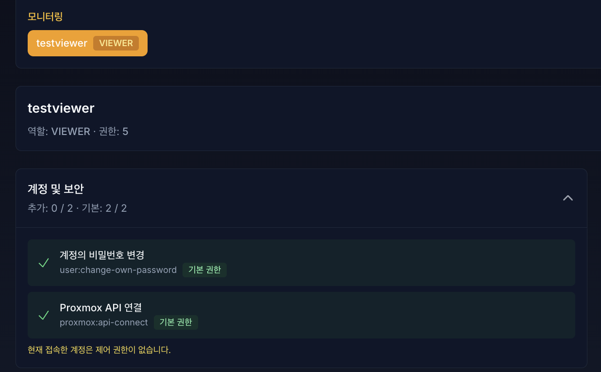
접속한 계정이 관리자가 아니라면 제어 권한이 없다는 메시지가 표시되며 제어 불가능합니다. (현재 접속 예시: 모니터링 역할 계정)
4.2.4 Pool 관리#

Pool 관리 기능은 리소스 접근 범위를 Pool 단위로 묶고, 사용자별 Pool 역할을 관리하는 기능입니다.
화면에서 Pool 생성, 리소스 연결/해제, 사용자 Pool 역할 할당/해제, Pool 삭제를 수행할 수 있습니다.
4.2.4.1 Pool 생성 및 목록#

4.2.4.1.1 새 Pool 생성#
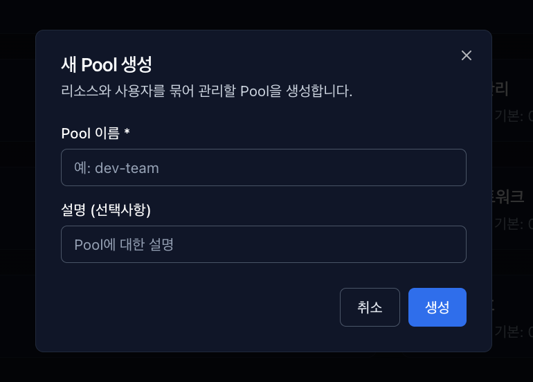
우측 상단 [+ 새 Pool] 버튼으로 생성합니다.
입력 항목:
Pool 이름(필수)
설명(선택)
동일 이름의 Pool이 이미 존재하면 생성할 수 없습니다.
4.2.4.1.2 목록에서 확인 가능한 정보#

Pool 이름 / 설명
멤버 수
리소스 수
생성일
4.2.4.2 주요 관리 작업#
4.2.4.2.1 리소스 연결#
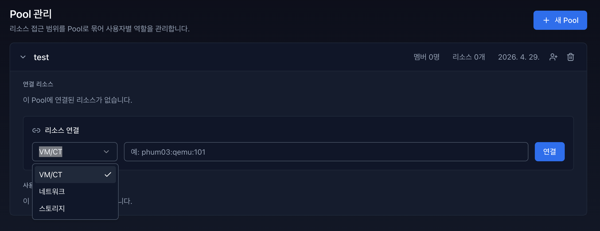
Pool 카드 확장 후 리소스 연결 영역에서 유형과 식별자를 입력하여 연결합니다.
연결 가능 유형:
VM/CT
네트워크
스토리지
식별자 형식:
VM/CT:
nodeId:qemu|lxc:vmid(예:phum03:qemu:101)네트워크:
nodeId:iface(예:phum03:vmbr0)스토리지:
storageId(예:local-lvm)
리소스 식별자는 한 번에 1개만 입력할 수 있으며, 이미 다른 Pool에 연결된 리소스는 중복 연결할 수 없습니다.
4.2.4.2.2 리소스 해제#

연결 리소스 우측 [X] 버튼으로 해제합니다.
4.2.4.2.3 사용자 역할 할당/해제#

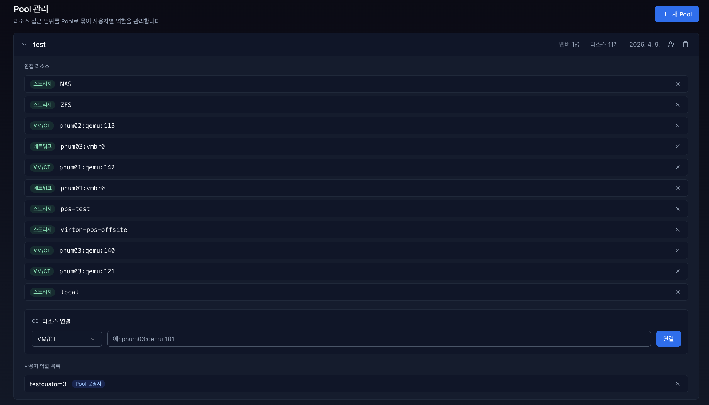
Pool 카드의 사용자 추가 아이콘으로 역할을 할당합니다.
할당 가능한 Pool 역할:
Pool 관리자 (POOL_ADMIN)
Pool 운영자 (POOL_OPERATOR)
사용자 역할 목록 우측 [X] 버튼으로 역할을 해제할 수 있습니다.
4.2.4.3 Pool 삭제#
Pool 카드 우측 휴지통 아이콘으로 삭제할 수 있습니다.
삭제 시 해당 Pool의 사용자 역할 매핑과 리소스 매핑이 함께 삭제됩니다.
4.2.4.4 Pool 역할별 접근 및 제어 범위#
역할 할당 제한:
ADMIN,SUPER_ADMIN계정에는 Pool 역할을 할당할 수 없습니다.
4.2.4.4.1 Pool 운영자 (POOL_OPERATOR)#
인스턴스 제어 가능:
vm.power,vm.start,vm.stop,vm.console,vm:resource-modify네트워크/스토리지 조회 가능
백업/스냅샷: 생성/조회/복구 가능, 삭제 불가
4.2.4.4.2 Pool 관리자 (POOL_ADMIN)#
인스턴스/네트워크/스토리지 조회+수정(RU) 가능
네트워크/스토리지 생성/삭제 불가
백업/스냅샷: 생성/조회/복구/삭제 가능